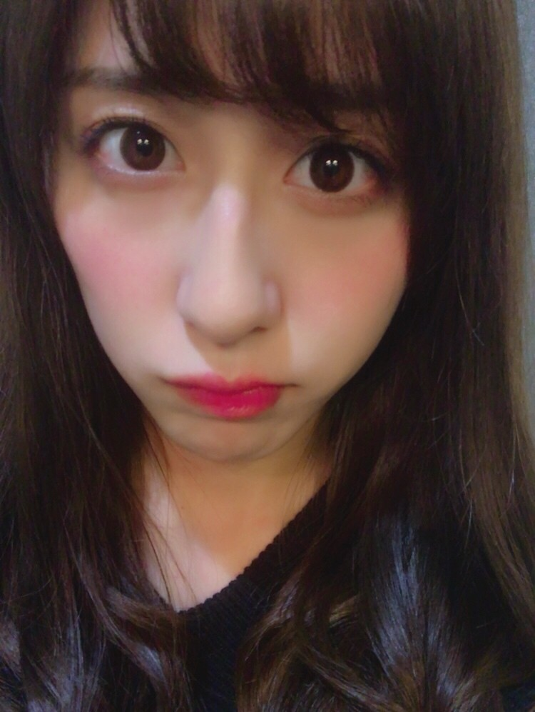
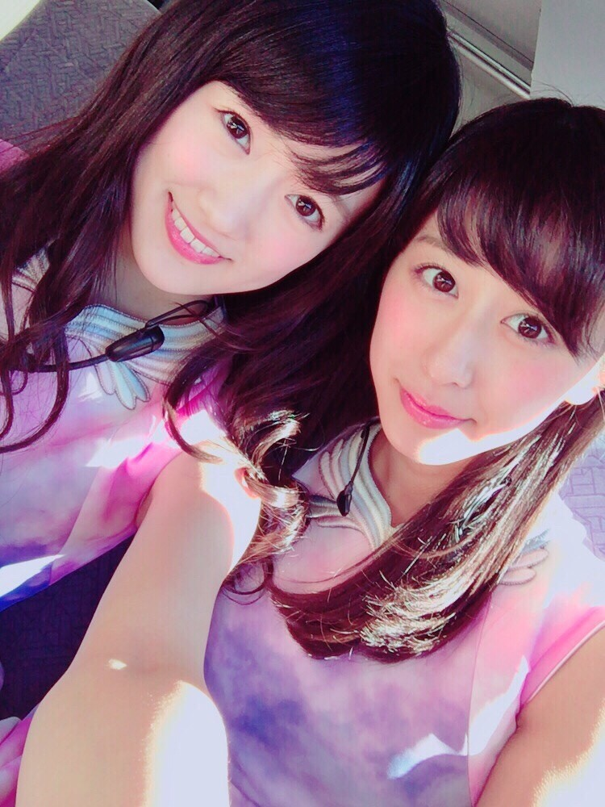
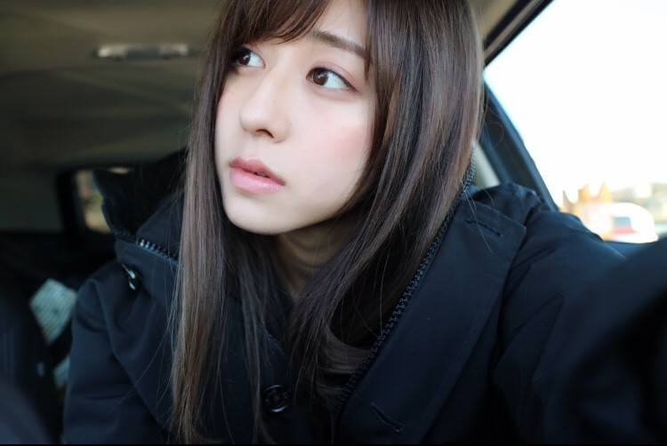

| 2016/12 29 Thu | 斎藤ちはる 好きなものを好きと伝えたい。 |
ちはるーむへようこそ。
もうすぐ今年も終わってしまいますが
皆さんいかがお過ごしですか？
斎藤家は大掃除があと一息です。笑
もうちょっと...！
大掃除の休憩時間には、
スカパー!に加入したので
色んな映画を観たりだとか、
back numberさんのアルバム
"アンコール"を買ったので
早速聞いてみたりだとか、
わりとのんびりした年末を過ごしています。

メイク道具やアクセサリーも少し整理したら
使えそうなやつも沢山出てきたので
メイクやオシャレも楽しくなりそうです！
赤?濃いピンク?のリップがお気に入り◎
--------------------------------♡
今年最後になるであろう、
#chihashot
"今年最後"という言葉が感慨深い。
あっという間すぎて驚く毎日です。
朝日が昇ってきたときの写真。
何かが始まりそうな不思議な雰囲気を
朝日は持っている気がする。
1日が始まる合図だからなのかもしれないけど
それとは別の何かが始まりそうで
ワクワクする。
時間が経って日が上まで昇ったときの写真。
上の写真と同じ場所で撮ったんだけど
これまた雰囲気が違う。
こっちの写真は持ってると良いことがありそうかも( ◦˙ ˙◦ )笑
どっちの写真もお気に入りです♪
いつもchihashotが好きだよ！って
言ってくれる方がいてくれるので
(需要はメンバーの写真よりも無いけど)
その方達が喜んでくれるのが嬉しくて
毎回ブログに載せています◎
私が良い！と思ったものや
私が好きなものを教えたいし、
それをまた好き！と言ってくれたら
それ以上に嬉しい事はないから(｡-_-｡)
普段の会話の中で
言いたい事とか思ってることを
真っ直ぐ言葉に出す事が出来なくて
後悔する事が多いのです...
口下手なの。
だからブログでは自分の好きなことや
自分の思ってることを伝えたい！と思ってます。
そのお返事となるコメントも
いつも大切に読ませて頂いてます！
皆さんの小さな変化だったり
皆さんの好きなものだったり
私に伝えたいことなどあったら
何でも教えてください◎
楽しみにしています！

去年の紅白リハの時。
--------------------------------♡
♬ ChihaMusic
「みんな空の下」絢香さん
自分もそんな人になりたいと
思える人物像が描かれていて、
難しいかもしれないけど
目指したいと聞くたびに思います。
"涙流さない どんなに辛くても
誰にも負けない強さ持ってるのは
周りを悲しませないあなたの優しさ"
人に優しくできて
人の事を思いやることのできる人が
大人だと私は考えているので、
そんな大人に、２０歳になりたい。
曇り空まで晴れにしてしまうような
太陽な人になりたいな。

ああ〜眠たいな〜
ああ〜お父さんまだかな〜という顔。
父のサーフィン中ずっと待ってたからね(｡-_-｡)笑
でもそんな待ち時間もたまには◎
おやすみ〜
斎藤ちはる